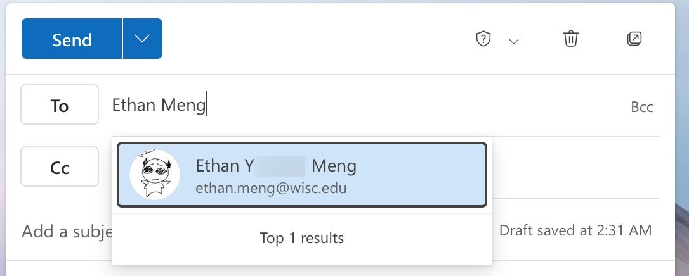
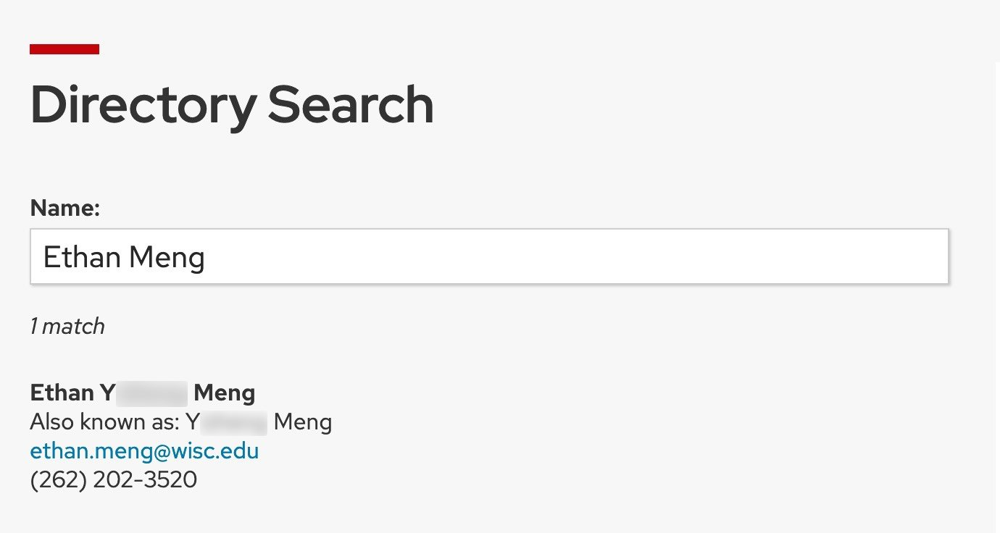

Ethan’s Guide to hunting down Wiscmails: IT lessons for my schoolmates
I have always been a huge fan of emails. And — thankfully — it is alive and well in the 2020s.
But many of you don’t use it!!! Instead you have Snapchat, Instagram…
I mean, sure — email has its limitations. MIME is absurdly inefficient at transporting multi-media data, an artifact of the old Internet protocols before TCP/IP became a universal thing. Emails are not end-to-end encrypted, and attempts to solve it such as S/MIME is a nontrivial task to setup and never truly caught on. Email is not instant messaging, which makes it very unsuitable for chatting with your friends and stuff… (okay *ahem*, maybe Snapchat isn’t so bad…)
But that doesn’t mean there aren’t places where emails shine! Firstly, it relies on an open protocol (specified by RFC) and relay servers, which anyone in theory can implement. In practice, we are better off using one of the existing mail servers — be it Google or Microsoft. Email is notorious for its unsolicited messages (better known as spam, because… Python?) but I’d say it is precisely this flaw where it stands out: you don’t have to send a friend request to someone in order to send email to them. Just a name @ domain and, woosh, off it goes! Just like the World Wide Web and the HyperText Transfer Protocol, they are parts of the open web where anyone can communicate with anything. (It’s like leaving your doors open before people started locking them up, except… well I think the analogy here is you wouldn’t be able to take out what’s in the room — just send stuff to your room.)
But ummmm I sound like a crazy person when I say I want to leave my doors open and not use a centralized network overseen by a huge corporation — but well, I’m not here to convince you to switch. (Email is just not for instant messaging, as I said.) I’m not saying that email is good for confidential data either — you have TLS or opportunistic TLS but in the end it is just pretty wrapper for, guess what, plain text, ’cause that’s what emails literally are — plain, unencrypted, text. (Plain as in broad daylight!) I’m just here… to say that emails are nice to have. Because email isn’t locked behind any company (other than needing to have access to some mail server — and there is plenty out there!), and everyone can email. (On the other hand if I want to send a message to someone on Instagram I’ll have accept these terms of condition, these other terms of condition, and maybe two or three more…… and agree to sell my data? That sounds fun as heck baby! This is the future, after all!)
So I’m gonna teach you how in this page. You’ll learn how to find emails of people who you just know the name of (maybe you picked up their Wiscard… who knows. i dunno.) And… that’s pretty much it yeah. That long introduction was sort of not needed, since I am just introducing you to tools to help you find someone & write stuff to them. :/
Lesson 0: Email addresses. [link]
Just to make sure we are on the same page: an email address has two parts: the name and the domain name. (In RFC 5322 Section 3.4.1, the most recent revision of the specification of the Internet Message Format, the two parts are called local-part and domain respectively.) For example, in the address “ethan@rapidcow.org”, “ethan” is the name, and “rapidcow.org” is the domain name. I think you all know that, but just to be clear on the terminology.
Aside: the domain can sometimes be useful in telling you who the sender is sending as: if the domain is rapidcow.org it’s probably me (I myself own the domain). If the domain is gmail.com it tells you nothing about the sender (Google owns it but anyone can create a Google account). If the domain is wisc.edu, it tells you the sender is affiliated with UW–Madison (only privileged people have an account). Beware of spoofing though — only trust properly DKIM signed emails (unless it is internal, in which case you are f%$ked and can only count on your gut instinct).
Aside 2: If the domain is *.wisc.edu (where * represents literally anything, the proper term is subdomains of wisc.edu), it is a part/subdivision of UW–Madison (usually a department, like math.wisc.edu and cs.wisc.edu (I think you are on it right now! Oh wait, but that’s pages.cs.wisc.edu, a sub-subdomain of the subdomain…)). Subdomains do not go the other way around though — that is, if you see the domain wisc.edu.rapidcow.org, it’s actually the subdomain “wisc.edu” under my domain “rapidcow.org”, not wisc.edu’s subdomain. (This can be confusing, but… it has always been this way since, I guess, the creation of DNS? Domains go way back before websites; maybe they had a good reason to subdivide stuff in reverse.)
Aside 2.5 (please skip this; this is just pure rant after I researched about domain names): For the gritty details, a subdomain is *.name.TLD, where “name.TLD” is any apex domain (i.e. a name that can be looked up in the whois database (I think)). And apex domains do not have to end in .com, .org, .net, .edu. It can be anything from country code TLD (.me, .io, .sh), quirky new-ish TLD (.dev, .name, .lgbt — yes, I am not kidding) to something + country code TLD (.ac.uk, .edu.cn, except the TLD is still just the last part and where it normally is the second-level domain name is used as a generic TLD, and then the actual domain name gets shoved into domain name — but let’s not go there because you’d get something like stu.vma.edu.cn and that is pure domain name insanity.)
Lesson 1: Email names. [link]
Now, admittedly, I don’t know how the names are internally distributed (obviously, duh). But generally speaking, us students have one of three kinds of wisc.edu emails.
(Actually two, no wait, I can’t count. But still three, because, well, there are slight differences for the one kind… I’ll get there alright =.=)
- (NetID, variation #1) So this is the kind where you are given first name initial + last name, sometimes with middle name initial, and sometimes with a numeric suffix. So if, let’s say… I take “Buckingham U. Badger”. Then your email name is either “bubadger” or “bbadger”, and sometimes (if the random generator deems necessary) it will come with a random number appended to it (that hopefully isn’t 69, but — oh well…) And because the last name can get very long or contain punctuations, all of that gets normalized to all-lowercase and truncated under some character limit — maybe. What is that limit, you may ask, well don’t look at me, my last name’s literally only 4 characters long…
- (NetID, variation #2) This is the one I got. It’s just a boring last name + number. (Why? I don’t know.) And remember what I said about the number hopefully not being a 69? Well… mine is meng69. (What a nice way to be remembered. 💀)
But, either way, those happen to be your email name because they are your NetID, and NetID [at] wisc.edu always works (source: trust me I read it somewhere but I’m too lazy to find it). Whether this counts as two types of emails… eh. I don’t know. I could make the case that the first name is optional too and, suddenly I can write a single rule for both. But I could never understand why they omitted my first name — they clearly knew my name at the time of applying existed and started with some letter…
This next one gets a bit spicy though. When you go to wiscmail.wisc.edu/account-admin/, you will see a section that says “Email addresses”. In it, it’ll say something called “First.Last Address”, which is an email alias you can activate right away (given, I suppose, nobody has taken it… I will be honest, I have no idea how I got “ethan.meng”. I’d feel bad for whoever can’t claim that because someone also has your name… :c)
And — in case it isn’t clear already: while you may not have a good chance guessing what number a person’s email has, you have a good chance guessing firstname.lastname. In my case both “ethan.meng” and my legal name are aliases that forward to the same Outlook mailbox (I requested both my name in use and legal name namely because I was coping with that 69 in my NetID and feeling salty that I could not change it to something more reasonable like “eyzmeng” — hmph… >_>). I can also send as either address, to top it off, so when I’m feeling goofy I can use “ethan.meng” and when goofiness would cost me, ehh… well, “meng69” it is.
NetID and firstname.lastname are AFAIK the only names you can get for wisc.edu.
Lesson 2: Email in Microsoft 365 directory [link]
Right, so this is a lesson I hope I don’t have to teach you…
But chances are, if you are using Wiscmail, it’s Microsoft — be it its web client, mobile client, or whatever crazy thing they decide to come up with. (Assuming you’re not a madman using Thunderbird or aerc-mail like me — which I guess, if you do already, you probably already know how things work in the Microsoft clients.) What you’ve probably noticed is that you can type in a person’s name and, in the dropdown, you get a list of candidates for auto-completion:

And then you can just select it and it’d fill in my address. It’s so simple right? If you have my name you have my email. Then you can just send it and… yep I will see it.
Lesson 3: Email in UW–Madison directory [link]
This is the worst of it all. It makes the blur I did above completely useless, because it just has my name — legal name and everything. (But Internet Archive crawler is probably not allowed there, so!)
The directory is at www.wisc.edu/directories/. It’s almost the same as typing into the address bar in Outlook, only this time… it’s completely public:

But that also means you can find virtually anyone! As long as it is, ahem, let me read this to you…
Use of the UW–Madison directory (White Pages) is restricted to single online look-up of individuals and departments. It is not intended or designed for large volume, bulk, reporting, or system authentication and/or authorization.
Yep. That was from the same page. So you can look up people… (nothing is private…… but hey! At least you know how to email me now. :)